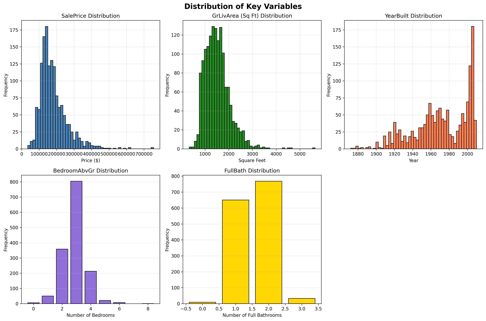
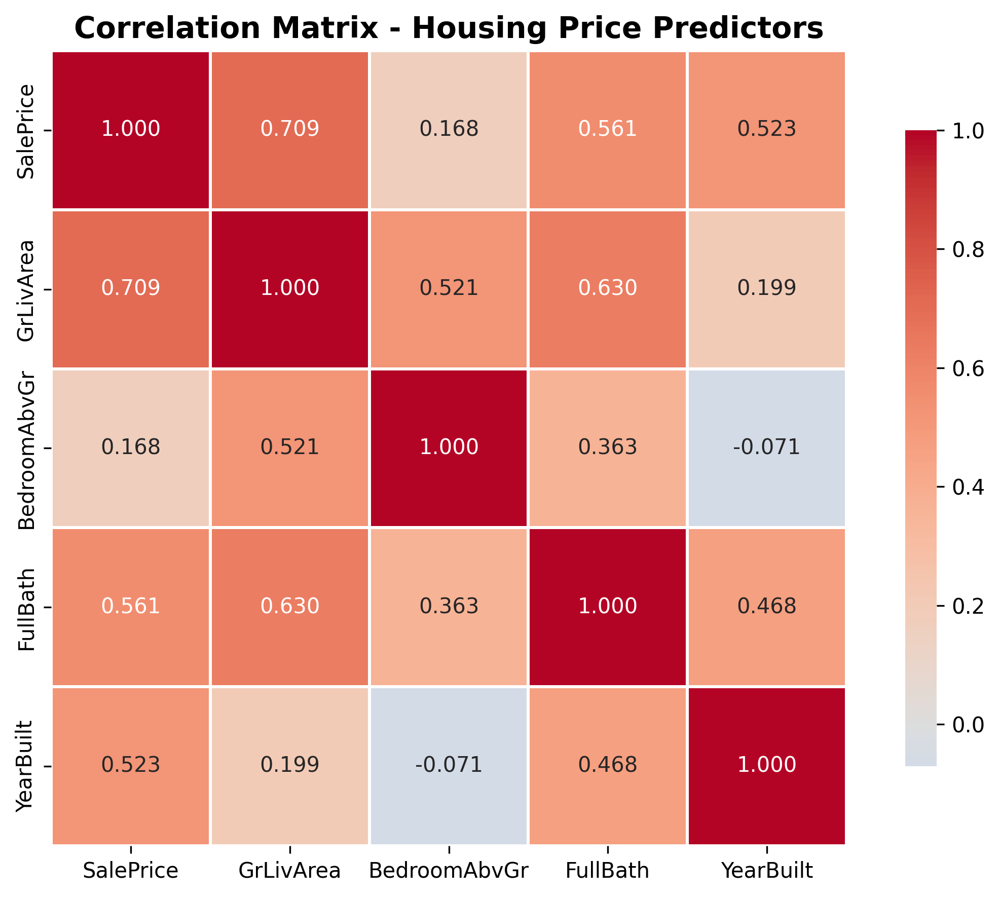
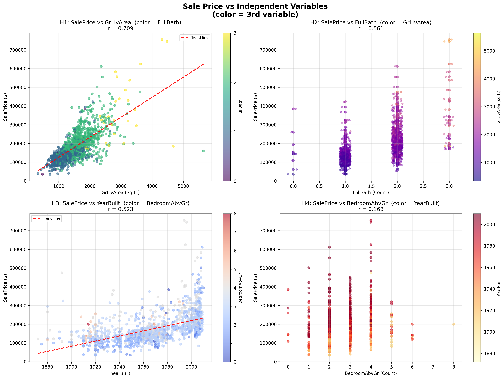
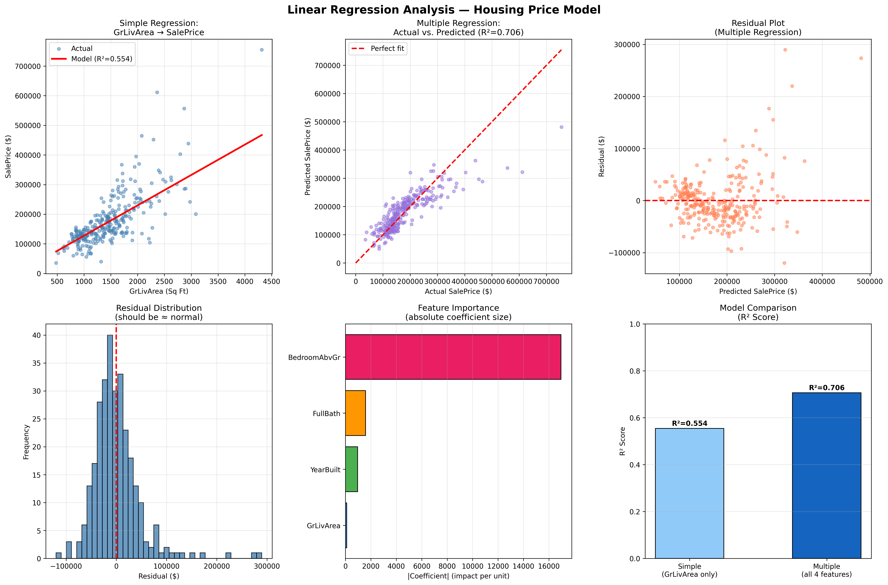

By: Delilah Hollander | Course: DSA 250 — Data Science & Analytics
For DSA 250, I analyzed 1,460 home sales in Ames, Iowa to identify which home features most strongly predict sale price. I examined four predictors — square footage, bathrooms, year built, and bedrooms — first with exploratory analysis, then built a multiple linear regression model to quantify each variable's true impact and make predictions.
Research Questions:
Source: Ames Housing Dataset (Kaggle — 81 original columns, 1,460 rows). I narrowed it to 5 key variables.
# Select key variables and drop any incomplete rows
key_vars = ['SalePrice', 'GrLivArea', 'BedroomAbvGr', 'FullBath', 'YearBuilt']
df_clean = df[key_vars].dropna()
# Result: 0 rows dropped — all 1,460 records were completeA .isnull().sum() check confirmed zero missing values in all five variables — no imputation needed.
SalePrice and GrLivArea are both right-skewed — most homes are moderate in size and price, but a few large, expensive properties pull the average up. Bedroom and bathroom counts are more symmetric and discrete.

The heatmap shows that GrLivArea (r = 0.709) and FullBath (r = 0.561) are the strongest individual predictors of SalePrice. Bedroom count (r = 0.168) is surprisingly weak — likely because bigger homes tend to have more bedrooms, so square footage accounts for most of that signal.

Each scatter plot uses color to encode a third variable, revealing multi-dimensional relationships at a glance:

I fit two models using scikit-learn, training on 80% of the data (1,168 homes) and testing on the remaining 20% (292 homes).
GrLivArea → SalePrice only
| RMSE | $58,472 |
| MAE | $38,341 |
| Slope | $102.49 / sq ft |
All 4 features → SalePrice
| RMSE | $47,468 |
| MAE | $32,045 |
| Improvement | +15.2 pp over simple |
Why is the bedroom coefficient negative? Once square footage is in the model, adding more bedrooms to the same square footage means smaller rooms — which buyers actually value less. This is a classic example of multicollinearity.
The diagnostic panel includes: simple vs multiple regression lines, predicted vs actual plot, residual plot, residual distribution, feature importance, and model comparison.

These predictions were generated by the trained multiple regression model (not a hand-coded formula). The ±1σ range uses the model's RMSE of $47,468.
| Sq Ft | Beds | Baths | Year Built | Predicted Price | Likely Range |
|---|---|---|---|---|---|
| 1,000 | 2 | 1 | 1960 | $130,399 | $82,931 – $177,867 |
| 1,500 | 3 | 1 | 1990 | $195,837 | $148,369 – $243,305 |
| 2,000 | 3 | 2 | 2000 | $257,434 | $209,966 – $304,902 |
| 2,500 | 4 | 2 | 2005 | $298,873 | $251,405 – $346,341 |
| 3,000 | 4 | 3 | 2010 | $355,670 | $308,202 – $403,138 |
Note: ±1 RMSE uncertainty band = ±$47,468. The model explains 70.6% of price variance on held-out test data.
Square footage is king. GrLivArea (r = 0.709) is the dominant predictor. Each additional sq ft adds roughly $107 in sale price. It's the single most powerful variable in both the simple and multiple models.
Bathrooms are a better investment than bedrooms. FullBath (r = 0.561) has more than 3× the correlation of bedroom count (r = 0.168). If you're renovating to sell, add a bath before a bedroom.
The age gap is real money. YearBuilt (r = 0.523) contributes roughly $960 per year newer. A 1950 vs. 2005 home at the same size could differ by ~$52,000.
Multiple regression explains 70.6% of price variance — a 15.2-point R² gain over the single-variable model. Real-world limitations (neighborhood quality, remodels, lot size) explain the remaining ~30%.